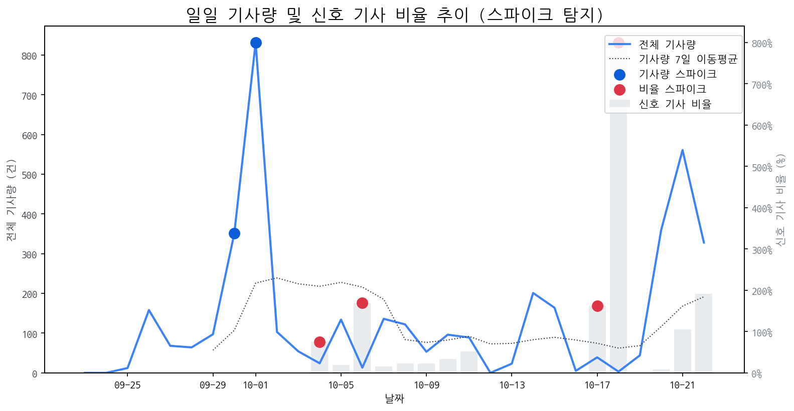

| 날짜 | 기사량 | Z-Score |
|---|---|---|
| 2025-09-30 | 351건 | 2.04 |
| 2025-10-01 | 832건 | 2.1 |
| 날짜 | 비율 | Z-Score |
|---|---|---|
| 2025-10-04 | 75.00% | 2.27 |
| 2025-10-06 | 169.23% | 2.05 |
| 2025-10-17 | 161.54% | 2.15 |
| 2025-10-18 | 800.00% | 2.22 |
| 급등 신호 | 오늘 언급량 | 어제 대비 증가 | 모멘텀(z_like) |
|---|---|---|---|
| 갤럭시 | 15 | 9 | 4.06 |
| 삼성전자 | 34 | 6 | 3.73 |
| 게이밍 | 8 | 5 | 2.6 |
| 폴더블 | 8 | 2 | 2.18 |
| 아이패드 | 5 | 5 | 2 |
| 메타 | 4 | 4 | 1.78 |
| 모멘텀 토픽 | z_like 점수 | 누적 언급량 |
|---|---|---|
| 갤럭시 | 4.06 | 46 |
| 삼성전자 | 3.73 | 224 |
| 게이밍 | 2.6 | 21 |
| 폴더블 | 2.18 | 43 |
| 아이패드 | 2 | 13 |
| 날짜 | 유형 | 제목 |
|---|---|---|
| 2025-10-15 | LAUNCH | 인하대, 이정환 교수 연구실 소속 학생들 국제학술대회서 성과 인정 |
| 2025-10-22 | INVEST | 이노테크 "코스닥 상장으로 글로벌 복합 신뢰성 환경시험 장비 기업 도... |
| 2025-10-20 | LAUNCH | 인하대학교 이정환 교수 연구실 소속 학생들, 국제학술대회서 성과 인정 |
| 2025-10-22 | INVEST,LAUNCH | '삼성전자 수율 개선에 주목'…유진證 "경쟁사 앞설 시기, 목표 주가 14... |
| 2025-10-22 | INVEST,LAUNCH | “헤드셋에 이런 기능이”...삼성 ‘갤럭시 XR’로 확장현실 경험 넓힌... |